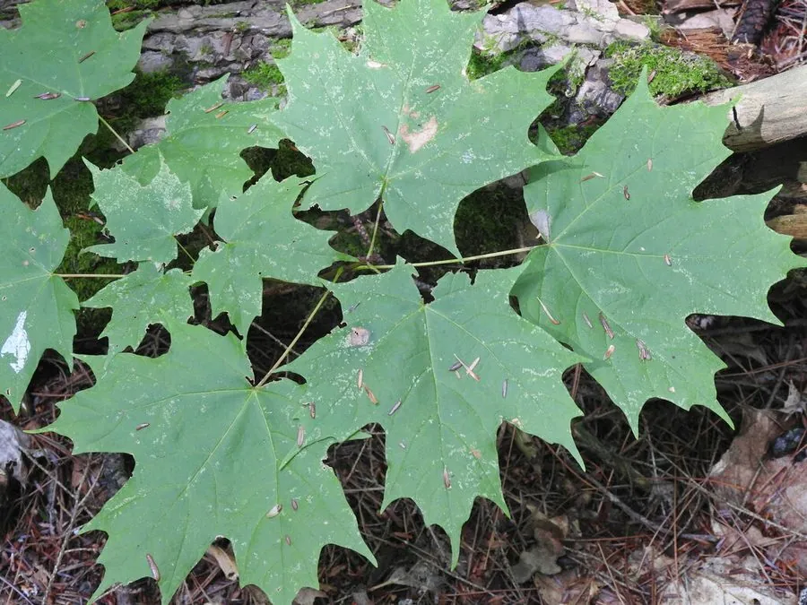

乔木 · 植物界
糖枫 Acer saccharum

北美东北部的落叶乔木，秋季叶色橙红，树干流出的树液可熬制成枫糖浆，是加拿大国旗上的枫叶原型之一。
- 分类
- 门被子植物门纲木兰纲目无患子目科槭树科属槭属
- 栖息环境
- 北美东北部温带落叶阔叶林，喜光耐寒，喜深厚肥沃土壤
- 地理分布
- 加拿大安大略、魁北克及美国东北部新英格兰地区
- 保护级别
- IUCN 无危（LC）；中国未列入国家重点保护野生植物名录
物种志
糖枫为落叶大乔木，高可达 35 m，树冠茂密，树皮灰褐色、老树呈条状剥落。叶片掌状 5 裂，宽 10–20 cm，裂片边缘具齿，入秋后叶色转为鲜黄、橙红，是北美秋季最壮观的色彩之一。春季先花后叶，花小、黄绿色，雌雄异株或杂性；果实为双翅果，成熟后旋转下落，种子可随风传播。
糖枫分布于北美洲东北部，从加拿大安大略、魁北克到美国新英格兰地区，喜光、耐寒，适宜深厚肥沃、排水良好的土壤，是温带落叶阔叶林的主要树种。糖枫的树液含糖量约 2%–3%，每年早春采集后经蒸发浓缩可制成枫糖浆，约 40 L 树液才得到 1 L 枫糖浆；枫糖产业是北美重要的传统产业。木材坚硬，可用于地板、家具与乐器；秋季叶色艳丽，是著名的秋景观赏树种。
形态与习性
- 株高可达 35 m，树冠茂密
- 花期3–4 月，先花后叶
- 果期8–9 月，双翅果成熟
- 光照喜光，幼树耐阴
- 水分喜湿润，忌积水
- 土壤深厚肥沃、排水良好的壤土
- 树液含糖量约 2%–3%，可熬制枫糖浆
- 主要用途枫糖浆、硬木家具与乐器、秋景树
趣味知识
- 约 40 L 糖枫树液才能熬出 1 L 枫糖浆，糖枫因此被称为“枫糖树”。
- 糖枫秋季叶色橙红，是北美新英格兰地区秋季赏枫的主要树种。
- 加拿大国旗上的枫叶图案来自糖枫，糖枫也是加拿大重要的国家象征。
- 糖枫木材坚硬致密，常被用于制作保龄球道、地板与钢琴部件。